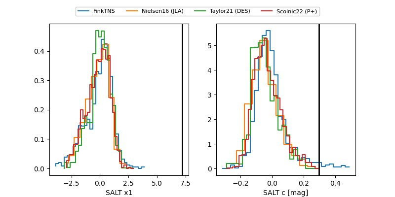

FINK: ZTF25abmpfnq
Lasair: ZTF25abmpfnq
ALeRCE: ZTF25abmpfnq
ZTF25abmpfnq (ztf,fink)
equatorial (ra, dec) = (72.9949,-13.95804)
galactic (l, b) = (212.5453,-32.68870)

last ztfg=19.29, ztfr=19.12
2 ztfg, 5 ztfr detections